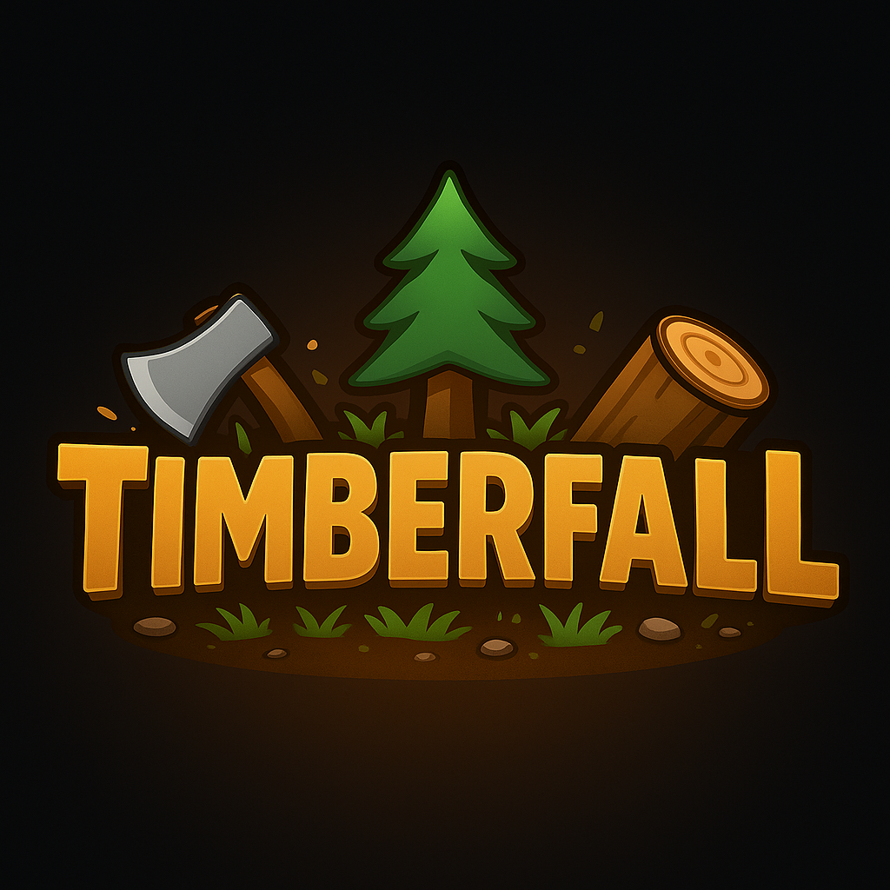
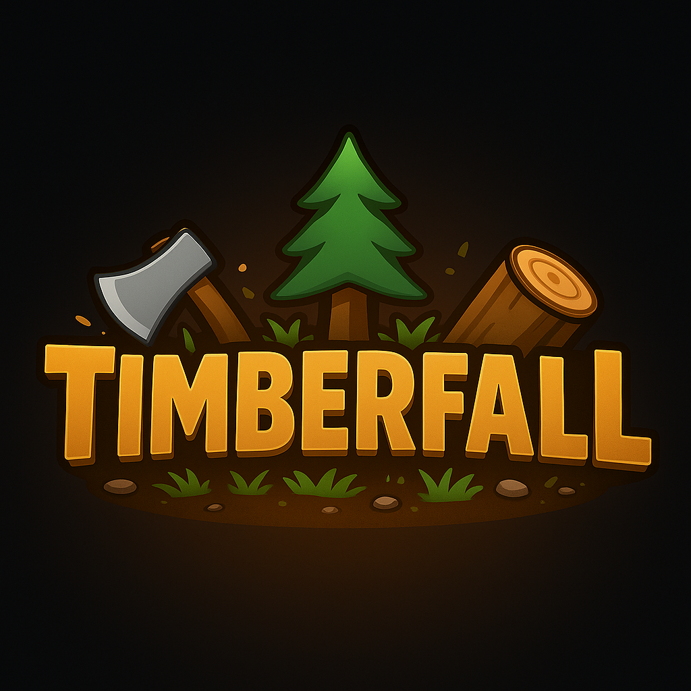

About Me
Hey, I'm Harry, better known as "Qwacky89" online. I'm 16 years old and I've been obsessed with game development and 3D modeling since 2019. What started as just messing around in Roblox Studio and Blender quickly became a full-on passion. I'm always trying new ideas, learning new skills, and figuring out how to make cooler and more polished projects each time. Honestly, I jump between projects a lot (my brain doesn't like to sit still), but every single one teaches me something valuable that I bring into the next.
For years I was just exploring, learning the ropes—building random systems, creating mechanics, experimenting with UI, and slowly getting better at design and polish. I went through burnout phases and a lot of unfinished ideas, but with each failure I learned how to plan better and work smarter. Recently though, everything clicked. My game "Timberfall" is my first fully built project that I actually want to release, and it's proof to myself that I've come a long way since the start.
 
